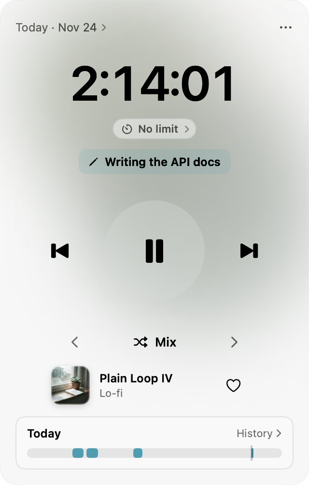
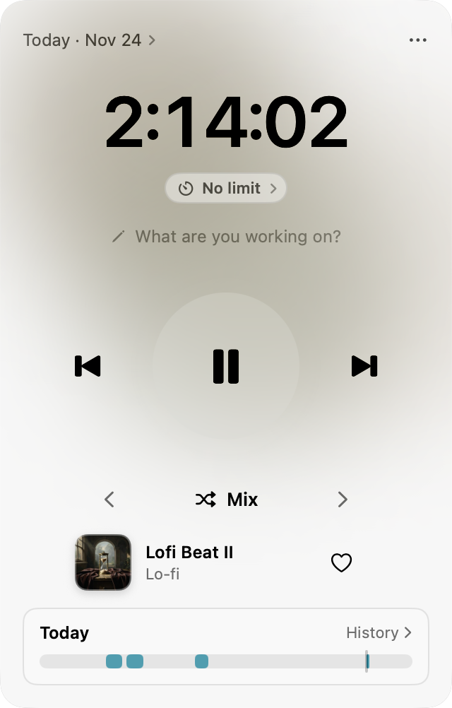
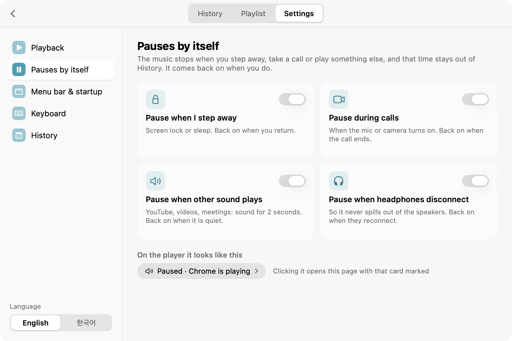
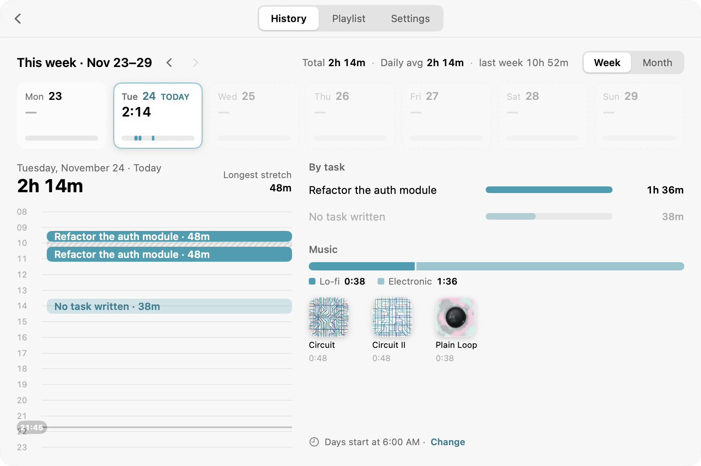
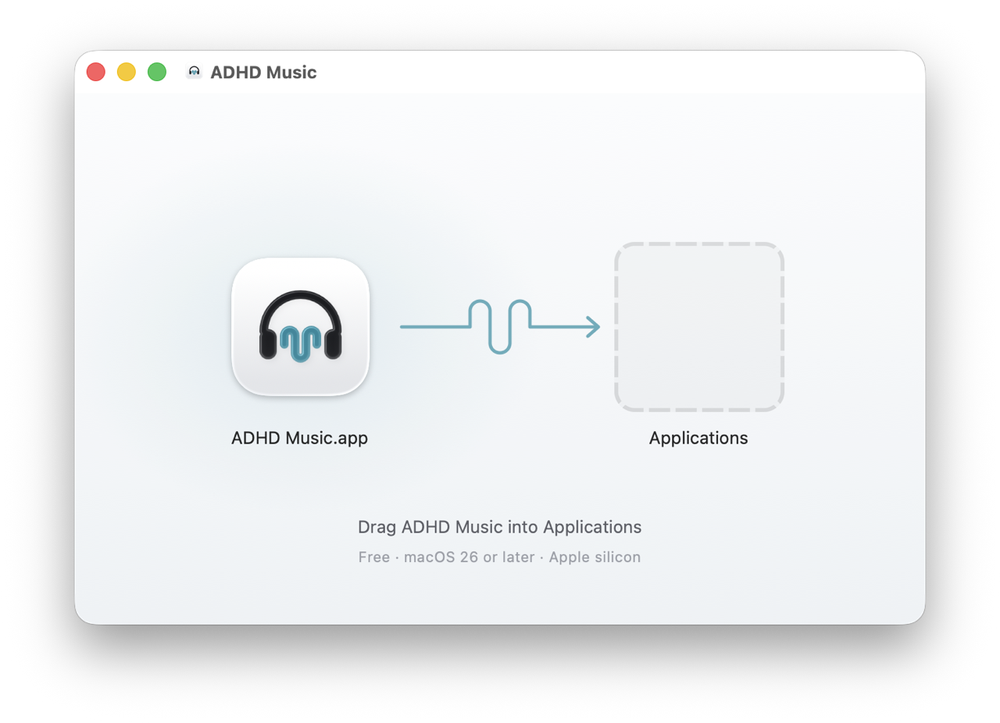

ADHD Music: From scattered to steady.
Plain, steady music for focused work.
It lives in your Mac’s menu bar.

- A pulse on the beatA faint pulse made for ADHD focus. Attention drifts less.Woods 2024
- No voicesLyrics pull your mind into words. There are none here.Vasilev 2018 · Souza 2023
- No surprisesADHD brains react more to sudden sounds. Nothing jumps out here.Levy 2025 · Hughes 2014
- Just a loopOne pattern on repeat, no tune to follow. It stays in the background.Bell 2012
01Why it works
Built for ADHD from the start.
We read 23 studies on ADHD and sound. Four rules came out of them, and every song follows all four.
No voices
Lyrics get in the way of reading and remembering.
So every song is instrumental: no lyrics, no spoken words.
Vasilev 2018 · Souza 2023
No surprises
ADHD brains react more to sudden sounds.
So nothing jumps out: no drops, no hits, no alarms.
Levy 2025 · Hughes 2014
Just a loop
A familiar loop distracts less than a tune you follow.
So each song repeats one pattern, with no melody to chase.
Bell 2012
A pulse on the beat
A steady pulse helped listeners whose attention drifts easily.
So every song carries a faint pulse locked to its beat.
Woods 2024
- 2024Systematic Review and Meta-Analysis: Do White Noise and Pink Noise Help With Attention in Attention-Deficit/Hyperactivity Disorder?
- 2024Rapid modulation in music supports attention in listeners with attentional difficulties
- 2024Sensory white noise in clinical ADHD: Who benefits from noise, and who performs worse?
- 2025Differential impacts of addition and omission deviants on the working memory performance of adults with and without self-reported ADHD
- 2026Pink Noise and a Pure Tone Both Reduce 1/f Neural Noise in Adults With Elevated ADHD Traits: A Critical Appraisal of the Moderate Brain Arousal Model
- 2025Acoustic stimulation as a means to improve attention in children with attention-deficit/hyperactivity disorder (ADHD)
- 2026Effects of White Noise on Academic Skills in Children with ADHD and Specific Learning Disorders: New Perspectives for Personalised Rehabilitation and Educational Intervention
- 2022Listening to White Noise Improved Verbal Working Memory in Children with ADHD: A Pilot Study
- 2016Comparing Auditory Noise Treatment with Stimulant Medication on Cognitive Task Performance in Children with ADHD: Results from a Pilot Study
- 2025Exploring the Intersection of ADHD and Music: A Systematic Review
- 2024Effects of Background Music on Attentional Networks of Children With and Without ADHD: Case Control Experimental Study
- 1996The Effects of Auditory Stimulation on the Arithmetic Performance of Children with ADHD and Nondisabled Children
- 2011Music and video as distractors for boys with ADHD in the classroom: comparison with controls, individual differences, and medication effects
- 2020Contrasting effects of music on reading comprehension in preadolescents with and without ADHD
- 2022The effect of Chinese pop background music on Chinese poetry reading comprehension
- 2019Listening to Mozart Improves Current Mood in Adult ADHD: A Randomized Controlled Pilot Study
- 2010Pilot feasibility study of binaural auditory beats for reducing symptoms of inattention in children and adolescents with ADHD
- 2025Sustained attention in attention-deficit subjects and the impact of binaural beat stimulation evaluated by behavior and EEG
- 2023Binaural beats to entrain the brain? A systematic review of the effects of binaural beat stimulation on brain oscillatory activity
- 2025A parametric investigation of binaural beats for brain entrainment and enhancing sustained attention
- 2025Outcomes of music therapy on children and adolescents with ADHD: a systematic review and meta-analysis
- 2026Influence of rhythmic music game intervention on executive function and sensorimotor ability of children with ADHD
- 2025Listening habits and subjective effects of background music in young adults with and without ADHD
02What you hear
Music that stays in the background.
27 songs in Lo-fi, Grooves and Electronic, each a seamless 30‑minute stretch.
Shuffle keeps songs you just heard from coming back, songs you skip early come up less, and you choose how strong the pulse is.
Add a sound underneath, if you like
- Rain
- Waves
- Stream
- Brown noise
- Pink noise
- White noise
03See it
See it in 45 seconds.
04The player
It lives in your menu bar.
Click the time in your menu bar and the player opens. Click again and it tucks away.
The big number is today’s focus time. It only counts while music plays.

05Pauses by itself
It steps aside when life cuts in.
The music pauses, then plays again on its own. That time stays out of History.
When you step away
Screen lock or sleep. Back on when you return.
During calls
When the mic or camera turns on. Back on when the call ends.
When another app plays sound
Like a YouTube video. Back on when it is quiet.
When headphones come off
So it never spills out of the speakers. Back on when they reconnect.

06Your focus, counted
See where your focus went.
Today’s focus time sits in your menu bar. History shows each stretch, the task you named and the music you heard.
- Week strip
- Day timeline
- Time per task
- Music you heard
- Month view

07Install
Three steps.
- 1Open the .dmg.
- 2Drag ADHD Music into Applications.
- 3Open it. It lives in your menu bar.
macOS asks once to let it hear other apps’ sound. That is how it pauses for a YouTube video. Nothing is recorded.

Your steady line
starts here.
No account. Works offline.
Nothing leaves your Mac.
Questions
Why does it ask to hear other apps?
macOS calls it System Audio Recording. The app only checks if another app, like a YouTube video, is playing, so it can pause and play again. Nothing is recorded.
Does it work offline?
Yes. There is no account to make, and nothing leaves your Mac.
Is it really free?
Yes, free to download and use. The code is open on GitHub.
Which Macs does it run on?
Macs with Apple silicon on macOS 26 or later. The download is about 460 MB.